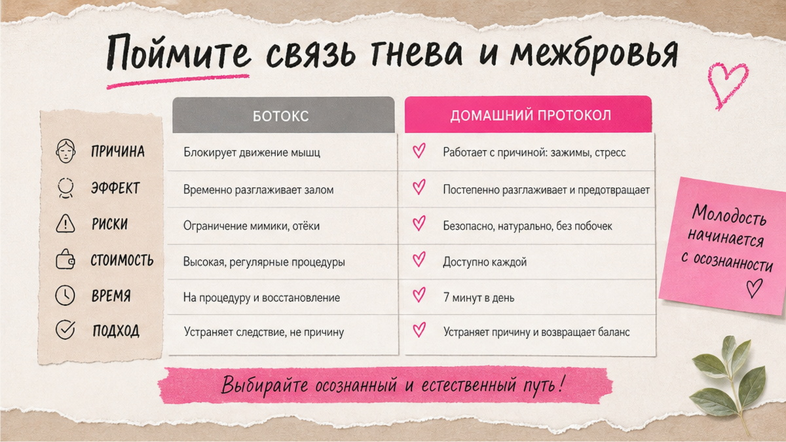
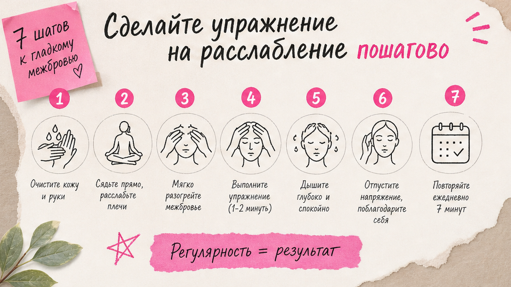
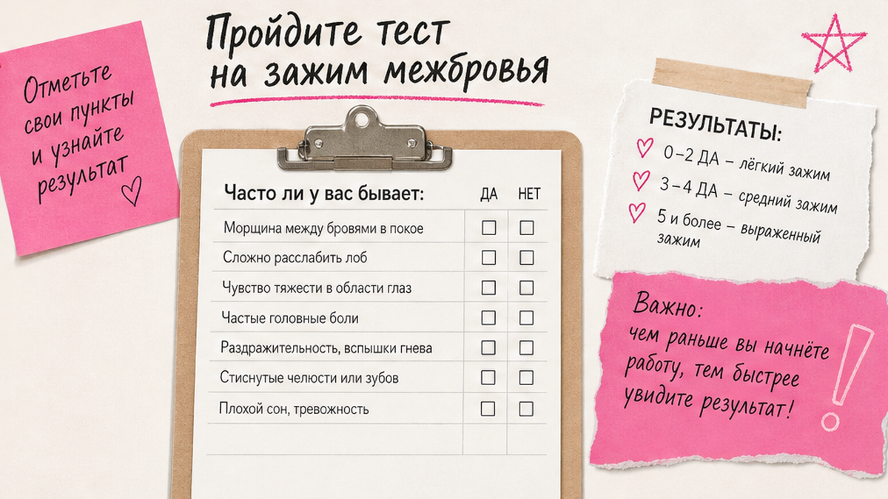

Межбровный залом часто появляется не "от возраста", а от привычки собирать брови - особенно когда вы концентрируетесь, злитесь или просто "держите лицо". Если вы ищете межбровный залом упражнения дома, важнее не одна волшебная техника, а связка: понять, почему мышцы между бровями перерабатывают, пройти короткий тест на зажим и сделать мягкое расслабление 7-10 минут - без боли, без обещаний "минус десять лет" и без замены консультации врача при острых состояниях.
Межбровный залом - это складка от хронического сближения бровей: две вертикальные или наклонные линии между бровями. Главные "виновники" - мышца, смыкающая бровь (сводит брови к переносице), и кожная мышца переносицы (тянет кожу вниз по центру). Стресс и подавленный гнев часто усиливают зажим, но домашний протокол работает с телом, а не "лечит характер". Давление в упражнениях - 2-3 из 10. Первые изменения по ощущениям - обычно через 2-3 недели регулярности.
Я смотрю на межбровье как на зону привычки, а не как на приговор. Когда клиентка говорит "я уже не злюсь, а залом остался" - почти всегда находим скрытый режим: брови чуть сдвинуты даже в покое, взгляд "собранный", челюсть сжата. Ниже - как связаны эмоции и мимика (без псевдодиагнозов), как за минуту понять, насколько зона зажата, и пошаговый протокол расслабления, который можно повторять дома.

Межбровный залом - вертикальные или наклонные линии между бровями. Они появляются, когда брови сближаются к переносице - при злости, боли, ярком свете, чтении мелкого шрифта или просто при привычке "собирать лицо".
Две мышцы создают основной рисунок. Мышца, смыкающая бровь - тонкая полоска под кожей у внутреннего края брови; она тянет брови внутрь и чуть вниз, отсюда диагональные морщинки. Кожная мышца переносицы - короткая мышца на переносице; она опускает кожу между бровями по центру, и появляется вертикальная складка. Если обе работают годами в режиме "полудня", кожа медленнее расправляется, и залом становится заметнее даже без эмоции.
Психосоматика здесь - не мистика. Тело запоминает лицо, которое вы чаще показываете. Когда вы привыкли терпеть раздражение, спорите с экраном или "держите себя в руках" через напряжение лица, межбровье остаётся в лёгком зажиме. Это не значит, что вы "плохой человек" или что залом = гнев навсегда. Это сигнал: мимическая привычка перегружена.
Делайте: относитесь к залому как к привычке мышцы + кожи, а не как к "штрафу за характер". Не делайте: ждать, что одна медитация за вечер стирает годы зажима. Проверьте: в спокойной обстановке посмотрите в зеркало - брови сдвинуты к центру, даже когда вы "спокойны"? Это частый скрытый триггер.
Ботокс в межбровку временно блокирует сокращение - залом разглаживается на месяцы. Но если привычка хмуриться остаётся, после отхода препарата рисунок возвращается. Домашний путь другой: мы не отключаем мышцу, а учим её отдыхать. Медленнее, чем укол, зато вы сохраняете живую мимику и не зависите от календаря повторных процедур.
Отдельно про "гнев на лице". Я не говорю, что каждая складка - это "злость в душе". Но если вы хмуритесь в пробках, на совещаниях или когда терпите раздражение, тело получает сигнал: брови вперёд, переносица вниз. Со временем это становится автоматическим. Мягкое дыхание и осознанное расслабление бровей - не психотерапия, а бытовой способ не держать лицо в режиме "собранности" сутками.
Если параллельно беспокоят горизонтальные линии на лбу, посмотрите материал про морщины на лбу без ботокса - лоб и межбровье часто зажимаются вместе, и протоколы хорошо работают парой.

Перед упражнениями полезно понять, насколько зона "застряла" в напряжении. Тест занимает около минуты и не требует зеркала, хотя с зеркалом нагляднее и точнее.
Чеклист самопроверки:
Миниплан на 7 дней наблюдения: утром - 10 секунд "распустить брови" перед умыванием → днём - правило "заметила зажим - 3 вдоха + опустить брови" → вечером - короткий протокол ниже → SPF каждое утро → вечер без агрессивных кислот на межбровье в дни массажа.
Если тест показывает сильный зажим к вечеру каждый день, добавьте перед протоколом расслабление лица за 5 минут - так межбровье откликается быстрее.

Цель - не "накачать" межбровье, а снять лишний тонус и вернуть мягкое движение кожи. Работайте на чистой коже с каплей крема для лица - так пальцы скользят, кожа не тянется. Я беру дневной или ночной крем из своей линии Моя косметика: без спирта и без жёстких кислот на старте протокола. Если крема нет под рукой - подойдёт капля нейтрального масла для лица, но крем удобнее для ежедневной практики.
Все движения медленные, без боли и без силового нажима.
Частота: 5 раз в неделю, лучше вечером. Утром - только 10 секунд "распустить брови" перед SPF, без глубокой проработки.
Ошибка новичков - давить на переносицу "чтобы быстрее". Кожа между бровями тонкая, под ней сосуды и нервные окончания. Если после протокола краснота держится больше 20-30 минут или появляется головная боль - уменьшите давление вдвое и сократите число повторов. Лучше 5 минут мягко, чем 15 минут "до жжения".
Если ночью лоб и межбровье сминаются во сне, попробуйте мягкую схему из материала про тейпы на ночь - тейп не заменяет упражнения, но снижает ночное сминание, пока вы переучиваете мимику.
Упражнения работают быстрее, когда убираете мелкие повторения, которые каждый день "рисуют" залом заново. Я прошу клиенток не "бороться с характером", а менять микропривычки - они проще, чем кажется.
Делайте: правило "заметила хмурость - выдох + брови к вискам". Не делайте: сутками держать "маску спокойствия" через напряжение лица - это тоже зажим. Избегайте: чтения в темноте без лампы - глаза щурятся, брови съезжаются к центру.
Ежедневный чеклист:
Миниплан: экран → дыхание → вечерний протокол → SPF → одна неделя без агрессивного скраба на межбровье.
Кожа между бровями тонкая и быстро краснеет от перебора активов. Задача ухода - поддержать барьер, пока вы переучиваете мимику. Уход не "выправляет" мышцу, но не даёт зоне воспаляться и выглядеть глубже.
Делайте: мягкое умывание, увлажнение без спирта в первые недели протокола, SPF 30+ ежедневно. Не делайте: скрабить межбровье каждый день, совмещать в один вечер ретинол + кислоты + жёсткий массаж. Избегайте: глубокого пилинга межбровья в день массажа - кожа должна восстановиться.
| Ошибка | Что происходит | Как исправить |
|---|---|---|
| Сильный массаж межбровья | Покраснение, залом визуально глубже | Давление 2-3/10, скольжение, не "втирать до жжения" |
| Нет SPF при активной мимике | Складка закрепляется быстрее | SPF каждое утро, обновлять при долгом солнце |
| Ждать эффект за 3 дня | Разочарование, бросаете протокол | Минимум 21 день регулярности |
| Только ботокс, без привычек | Эффект уходит, рисунок возвращается | Параллельно работать с мимикой и экранными триггерами |
| Тейп + кислоты в один вечер | Раздражение переносицы | Разнести активы и тейп по разным дням |
| Хмуриться "для концентрации" | Мышца запоминает зажим | Сознательно поднимать брови на миллиметр при работе |
Чтобы подобрать крем и сыворотку под ваш тип кожи без перебора активов, пройдите короткую диагностику или посмотрите Моя косметика - для чувствительной переносицы часто достаточно мягкого увлажнения и SPF, пока идёт протокол расслабления.
Я не против инъекций как инструмента - я против иллюзии, что они заменяют работу с привычкой. Ботокс в межбровку уместен, когда нужен быстрый визуальный результат к событию или когда гипертонус настолько силён, что домашние техники пока не дают входа.
Домашний протокол уместен, если вы готовы к 3-4 неделям регулярности и хотите сохранить естественную мимику. Многие мои клиентки совмещают: укол раз в полгода + ежедневное расслабление межбровья - тогда интервал между процедурами часто увеличивается, потому что мышца меньше "дергается" в привычке.
Обратитесь к врачу очно, если залом сопровождается сильной головной болью, онемением, асимметрией лица, резким ухудшением зрения или если домашние техники вызывают боль, отёк или синяки. Это не "страшилка", а здравый смысл: сначала исключить то, что не лечится массажем.
Психологическая работа с гневом может идти параллельно с телесным протоколом - но в этой статье мы говорим только о мягком снятии мимического зажима, не о замене психотерапии. Тело и эмоции связаны, а ваш план может включать и то, и другое - без фанатизма и без вины.
Достоверность: рекомендации носят оздоровительно-косметический характер и не заменяют консультацию врача. Решение об инъекциях - только с лицензированным специалистом после очного осмотра.
Мелкие мимические складки часто смягчаются за 3-6 недель регулярного расслабления и работы с привычками. Глубокие стойкие заломы полностью "стереть" дома нереалистично, но их можно сделать менее заметными и замедлить углубление.
Оптимально 5 раз в неделю по 7-10 минут вечером. Два дня отдыха нужны, чтобы кожа не раздражалась. Утром достаточно 10 секунд "распустить брови" и SPF.
По ощущениям межбровье "отпускает" часто уже на 10-14 день. Визуально мелкий залом обычно мягче к 3-4 неделе при стабильных привычках сна, SPF и экранных перерывах.
Не в буквальном смысле. Но привычка хмуриться при раздражении или концентрации реально перегружает мышцы между бровями. Работа с эмоциями и телесное расслабление могут идти параллельно и усиливать друг друга.
Нет. Эффект временный, обычно несколько месяцев. Без изменения привычек мимика возвращается. Домашний протокол как раз про причину - тонус и повторяющиеся движения.
Только очень мягко и после теста на небольшом участке. При выраженном куперозе или розацеа сначала согласуйте метод с дерматологом.
Тейпы снижают ночное сминание и помогают профилактике, но не блокируют мышцу как инъекция. Лучший эффект - в связке с дневным расслаблением межбровья и работой с экранными триггерами.